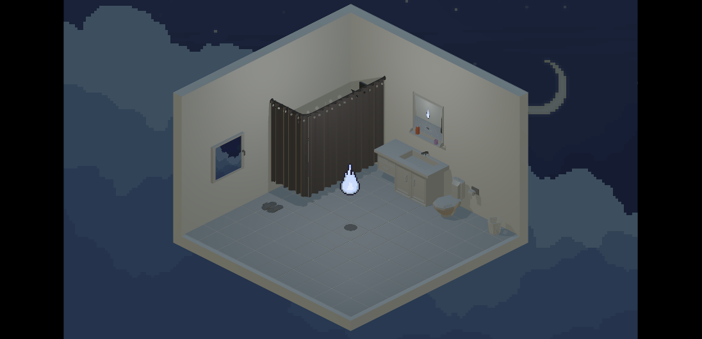

About Me
Hi! I'm Kaegan Wijaya, an avid game developer and designer. I believe that games have everything needed to be considered an art form along with things like movies and literature, and I hope to share that with other people. Welcome to my portfolio!
Projects
My Itch.io Project

A Bathroom in the Clouds
A Bathroom in the Clouds is a short interactive fiction visual novel revolving around themes of depression and anxiety. You play as a spirit who must interact with objects inside of a room to convince Mahiru, a depressed and isolated girl, to go outside again. This is a game that I solo developed and designed, having done almost all of the 2D art myself as well as all of the coding.
Play on Itch.io